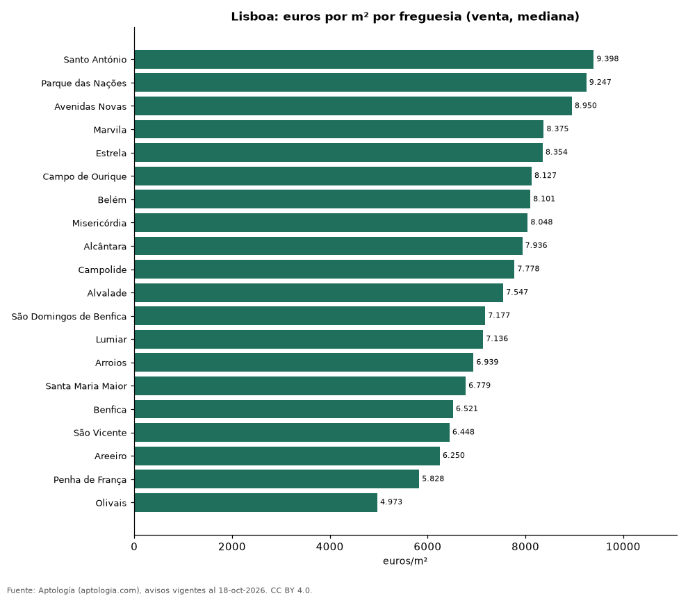

Precio de la vivienda por freguesia en Lisboa: venta y arriendo en 20 freguesias (octubre 2026)
Estudio con datos abiertos (CC BY 4.0). Versión original: https://github.com/elbroker/aptologia-datos/tree/main/estudios/precio-vivienda-lisboa-por-freguesia-2026 · DOI: 10.5281/zenodo.23460807
La freguesia con el metro cuadrado más caro de Lisboa es Santo António, con 9.398 euros (USD 10.565) en la mediana de apartamentos en venta; la más barata de la muestra es Olivais, con 4.973 euros (USD 5.590). En arriendo, el canon mediano más alto se pide en Santo António (3.188 euros (USD 3.583) al mes) y el más bajo en Lumiar (1.700 euros (USD 1.911)).
Resumen: analizamos 1.724 avisos de apartamentos en 20 freguesias de Lisboa con 30 avisos o más.
Actualizado: 18 de octubre de 2026 (datos del 18 de octubre de 2026) · Próxima actualización: mensual.

Resumen
| Indicador | Valor |
|---|---|
| Más cara (venta por m²) | Santo António: 9.398 euros (USD 10.565) |
| Más barata (venta por m²) | Olivais: 4.973 euros (USD 5.590) |
| Lisboa (venta por m², mediana) | 7.458 euros (USD 8.383) |
| Arriendo más alto | Santo António: 3.188 euros (USD 3.583) |
| Freguesias | 20 |
Freguesias de Lisboa
| Freguesia | Venta: euros por m² | Arriendo: euros al mes | Avisos (venta / arriendo) |
|---|---|---|---|
| Santo António | 9.398 | 3.188 | 126 / 30 |
| Parque das Nações | 9.247 | — | 57 / s. d. |
| Avenidas Novas | 8.950 | 2.300 | 116 / 57 |
| Marvila | 8.375 | — | 56 / s. d. |
| Estrela | 8.354 | — | 112 / s. d. |
| Campo de Ourique | 8.127 | — | 46 / s. d. |
| Belém | 8.101 | — | 41 / s. d. |
| Misericórdia | 8.048 | — | 111 / s. d. |
| Alcântara | 7.936 | — | 50 / s. d. |
| Campolide | 7.778 | — | 45 / s. d. |
| Alvalade | 7.547 | 1.900 | 54 / 38 |
| São Domingos de Benfica | 7.177 | 1.750 | 37 / 31 |
| Lumiar | 7.136 | 1.700 | 157 / 36 |
| Arroios | 6.939 | 1.800 | 121 / 45 |
| Santa Maria Maior | 6.779 | — | 120 / s. d. |
| Benfica | 6.521 | — | 43 / s. d. |
| São Vicente | 6.448 | — | 55 / s. d. |
| Areeiro | 6.250 | — | 41 / s. d. |
| Penha de França | 5.828 | — | 54 / s. d. |
| Olivais | 4.973 | — | 45 / s. d. |
Medianas de apartamentos; — indica menos de 30 avisos. El canon es el mensual sin gastos comunes, condominio ni administración.
Preguntas frecuentes
¿Cuál es la freguesia más cara de Lisboa? Santo António, con 9.398 euros (USD 10.565) por m² en apartamentos en venta (octubre de 2026).
¿Dónde es más barato comprar apartamento en Lisboa? Entre los freguesias con 30 avisos o más, en Olivais: 4.973 euros (USD 5.590) por m².
¿Dónde es más caro arrendar en Lisboa? En Santo António, con un canon mediano de 3.188 euros (USD 3.583) al mes.
Metodología
- Fuente: exportes nocturnos de la base de datos de Aptología (aptologia.com) del 18 de octubre de 2026: avisos vigentes de vivienda en portales inmobiliarios de 13 países, recogidos por Aptología y vistos en línea entre el 11 y el 18 de octubre de 2026. Corte: 18 de octubre de 2026.
- Depuración: se eliminan duplicados exactos (misma ciudad, zona, tipo, precio, moneda, área, habitaciones y baños) y los precios fuera del percentil 1–99 de cada país, operación, moneda y tipo; el precio por m² usa solo avisos con área declarada entre 12 y 2.000 m² y también se recorta al P1–P99.
- Qué se mide: precios pedidos (publicados), no precios de cierre. En arriendo, el canon mensual sin administración, gastos comunes ni condominio.
- Muestra mínima: cada cifra publicada se apoya en al menos 30 avisos; las celdas con menos se omiten.
- Monedas: nunca se mezclan avisos de monedas distintas sin convertirlos. Conversión a dólares con la tasa de mercado de ExchangeRate-API (open.er-api.com, actualización del 18 Oct 2026): 1 USD = 3.182,80 COP, 1 USD = 18,47 M.N, 1 USD = 5,09 BRL, 1 USD = 3,44 PEN, 1 USD = 982,44 CLP, 1 USD = 1.514,57 ARS, 1 USD = 40,20 UYU, 1 USD = 5.705,37 PYG, 1 USD = 61,27 DOP, 1 USD = 0,89 EUR, 1 USD = 11,72 BOB; la UF chilena a 41.178,64 CLP (mindicador,cl. 18-oct-2026). Los avisos publicados en dólares se usan tal cual.
- Monedas: Venta en euros y arriendo en euros, la moneda en que se publica la mayoría de los avisos de cada operación; los avisos en otra moneda se excluyen. Las equivalencias en dólares entre paréntesis usan la tasa citada.
- Limitaciones: la cobertura depende de los portales que recorre Aptología en cada país y es mayor en las ciudades grandes y en los segmentos medio-alto y alto; el área es la que declara el aviso, sin verificar; los nombres de zona vienen de los portales.
- Privacidad: solo se publican agregados; no se publica ningún dato personal, enlace a avisos ni nombre de anunciante.
- Datos abiertos: datos.csv, licencia CC BY 4.0.
Cómo citar
Pinzón Pineda, D. M. (2026). Precio de la vivienda por freguesia en Lisboa: venta y arriendo en 20 freguesias (octubre 2026). Aptología (aptologia.com). https://github.com/elbroker/aptologia-datos/tree/main/estudios/precio-vivienda-lisboa-por-freguesia-2026. Datos: datos.csv, licencia CC BY 4.0.